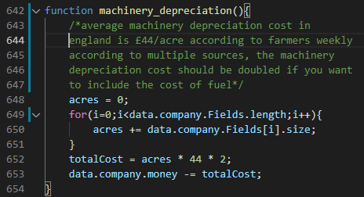

Future of the Simulation
Having seen exactly what the simulation can do,
we can now start to look towards the future and what can be added to the project beyond
that in order to make the simulation much more useful and successful.
Data Fitting
As described in the how to guide's accuracy section, I intend to
fit the variables within the simulation in order to make the data
outputted by the simulation much more accurate. This will hopefully
result in a simulation which can reproduce real world results consistently.
This should bring the project alot closer to achieving an initial goal of
having a simulation which can replicate real world results with a small
margin for error. Although I have made a small start on this, progress so
far has been minimal and not particularly successful. Therefore a fresh start
may be the easiest way to continue with this goal.
Machinery Depreciation
Currently within the simulation the cost of machinery is based off an average calculation
for farmers in England's yearly costs per acre. Although this does provide a figure which
isn't absurd, it is not particularly accurate. In order to make this better a list of the
machinery that a farm has should be added to the data.js file. This list should have every
machine on the farm and the value of said machine. The depreciation can then be accurately
calculated with this.

You would also have to add an estimate of fuel usage to each function where appropriate and
have this be another consumable that must be restocked within the restock function.
Feeding Meal
In beef farms it is a common practice to feed meal to calves and stock near to finishing age in
order to get them closer to the desired weight faster. This is a large expense for the farm as it
requires buying in meal. However it's benefits seem to mostly outweigh it's drawbacks and as it is
such common practice it should be included in the simulation. In order to include this in the
simulation
a function would be required to provide the meal to only certain groups of cows.
A simple loop through
all cows checking if they meet the age criteria for feeding meal to calves and the cull and age
criteria
for finishing stock could be easily implemented. However the cow_tick function would need to be
altered
in order to accomodate the addition of meal. If the meal is present for that cow to eat it should be
taken
into account for weight gained etc.
Due to the sheer complexity of a beef farm the scope for additional events being included within the
simulation
is almost limitless. I have detailed a few above however the only limiting factor is your time. The more you
can add to the simulation the more accurate it will be and therefore the more useful. However, do note that
with
any major changes to the simulation, e.g. the addition of feeding meal to finishing stock, the data would
need
to be fitted again in order to maintain the accuracy of the simulation.